Ship Supply
Services
Germany
Select a category below to explore the complete range of marine supply services — from fresh provisions to technical spare parts — available at all German ports.

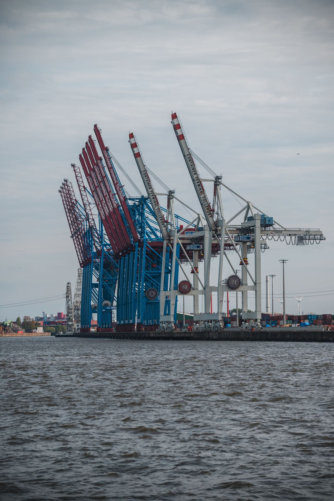
Germany — Europe's Maritime Gateway
Germany is a country in Central Europe, bordered by the North Sea and the Baltic Sea, and is home to some of the busiest and most advanced seaports on the continent. The Port of Hamburg, often called "Germany's Gateway to the World," is the country's largest port and the third-busiest in Europe.
Germany is famous for its engineering precision, automotive industry, and rich cultural heritage — and its maritime infrastructure is no exception. Its ports handle millions of tonnes of cargo each year, supported by world-class logistics, customs systems, and vessel service networks.
This robust maritime ecosystem makes Germany one of the most reliable destinations for ship supply in Europe.
Ports We Serve in Germany
These are our key German ports — and this list isn't exhaustive. We can coordinate supply to additional ports and anchorages on request. Click below to view the full list.
Complete Vessel Supply Services
Ship Chandler Germany provides the full range of marine supply services at all German ports. Explore each category below.
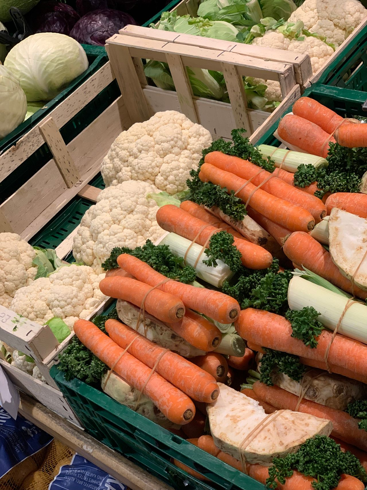
Ship Provisions Supply Germany
Ship Chandler Germany provisions supply fresh, chilled, frozen, and dry provisions to support vessel crews and galley requirements across all German ports, including Hamburg, Bremerhaven, Bremen, Wilhelmshaven, Rostock, Lübeck, Kiel, Cuxhaven, Emden, Brunsbüttel, Wismar, Sassnitz/Mukran, Brake, Nordenham, Stade, Flensburg, Stralsund, Wolgast, Papenburg, and Leer. Provision orders can be prepared according to crew nationality, vessel requirements, requested brands, and pack sizes. High-quality food provision supply ensures the crew remains well-fed and operational throughout the voyage. Sourcing reliable ship provisions in Germany requires careful attention to cold-chain logistics and shelf-life management. The procurement process guarantees that all food stores, including fresh produce, meats, and dry goods, meet stringent hygiene standards before delivery to the vessel. Fast coordination of food supply directly to the berth or anchorage minimizes disruption to the vessel's schedule.
- Fresh fruits & vegetables, meat, poultry, and seafood
- Dairy products, eggs, and bakery products
- Rice, pasta, flour, cereals, and dry provisions
- Canned products and frozen food
- Beverages, drinking water, juices, and soft drinks
- Coffee, tea, condiments, spices, and sauces
- International & local food products, special dietary items upon request
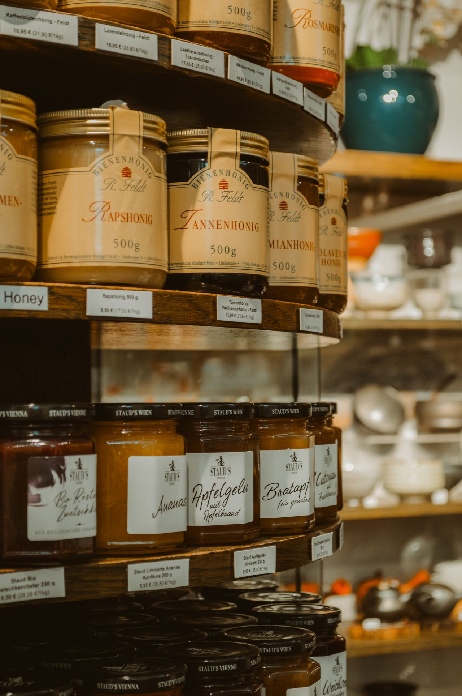
Bonded Stores Supply
Ship Chandler Germany bonded stores supply Bonded and duty-free provisions to applicable customs and German port regulations. Ship Chandler Germany coordinates necessary customs clearances and delivery permits directly to the vessel at Hamburg, Bremerhaven, Bremen, Wilhelmshaven, Rostock, Lübeck, Kiel, Cuxhaven, Emden, Brunsbüttel, Wismar, Sassnitz/Mukran, Brake, Nordenham, Stade, Flensburg, Stralsund, Wolgast, Papenburg, and Leer. A reliable bond store supply chain ensures crew welfare items and duty-free goods are delivered efficiently and compliantly. Navigating local customs procedures for bonded stores requires experienced coordination. The vessel supply service manages all necessary documentation to guarantee a smooth transfer of tobacco, confectionery, and personal care items. Strict adherence to port authority guidelines ensures that the bond store supply process is seamless, allowing the crew to receive essential welfare products without delays during the port call.
- Tobacco products and confectionery
- Soft drinks and beverages
- Personal care products
- Crew welfare items
- Other bonded products requested by the vessel
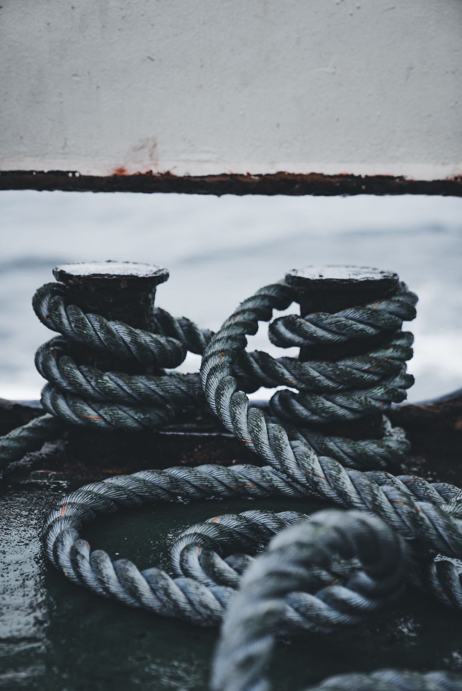
Deck Stores Supply
Ship Chandler Germany deck department can source and supply a wide range of deck consumables and equipment for vessels in Germany, including Hamburg, Bremerhaven, Bremen, Wilhelmshaven, Rostock, Lübeck, Kiel, Cuxhaven, Emden, Brunsbüttel, Wismar, Sassnitz/Mukran, Brake, Nordenham, Stade, Flensburg, Stralsund, Wolgast, Papenburg, and Leer. Deck store products can be quoted according to IMPA references, dimensions, SWL, material specifications, required certificates, or preferred manufacturers. High-quality deck supplies are essential for safe mooring, cargo handling, and routine vessel maintenance. Ensuring the availability of heavy-duty mooring ropes, wire ropes, and lifting accessories is critical for maritime safety. The ship chandler service verifies that all deck equipment meets required load capacities and safety certifications. From marine paints and coatings to cargo securing materials, the comprehensive deck supply ensures the vessel is fully equipped for challenging operational environments.
- Mooring ropes, hawsers, wire ropes, shackles, turnbuckles
- Chains, lifting accessories, and cargo securing materials
- Hoses, couplings, and marine hardware
- Marine paints, coatings, brushes, rollers, and tarpaulins
- Cleaning equipment and deck maintenance tools
- Safety signs, hand tools, PPE, and working equipment

Engine Stores Supply
Ship Chandler Germany supports engine departments with routine consumables, tools, and technical materials for main engines, generators, and auxiliary machinery at Hamburg, Bremerhaven, Bremen, Wilhelmshaven, Rostock, Lübeck, Kiel, Cuxhaven, Emden, Brunsbüttel, Wismar, Sassnitz/Mukran, Brake, Nordenham, Stade, Flensburg, Stralsund, Wolgast, Papenburg, and Leer. For technical requirements, customers are encouraged to provide maker, model, serial number, part number, drawings, or photographs to ensure accurate sourcing. Quality engine stores and spare parts minimize downtime and maintain vessel operational efficiency. Sourcing reliable engine room consumables, such as filters, gaskets, and mechanical seals, is vital for continuous vessel performance. The technical procurement team assists in identifying exact machinery components, ensuring compatibility with onboard systems. Access to premium lubricants, hydraulic fittings, and workshop consumables keeps the engine department fully operational during transit and port stays.
- Filters, gaskets, bearings, valves, and mechanical seals
- Pumps, hydraulic hoses, fittings, and hydraulic products
- Lubricants, greases, and workshop consumables
- Measuring instruments, hand tools, and power tools
- Fasteners, electrical materials, and welding consumables
- Engine-room cleaning chemicals, pipes, fittings, and flanges
- Selected machinery spare parts

Cabin & Galley Stores
Ship Chandler Germany provides everyday consumables and equipment required by the accommodation and catering departments on merchant vessels calling at all German ports, including Hamburg, Bremerhaven, Bremen, Wilhelmshaven, Rostock, Lübeck, Kiel, Cuxhaven, Emden, Brunsbüttel, Wismar, Sassnitz/Mukran, Brake, Nordenham, Stade, Flensburg, Stralsund, Wolgast, Papenburg, and Leer. Cabin and galley stores are sourced to ensure crew comfort and hygiene standards are maintained throughout the vessel's voyage. High-quality accommodation supplies, including bed linen, towels, and mattresses, contribute significantly to crew morale. The vessel supply service also ensures the galley is well-equipped with commercial-grade cookware, utensils, and tableware. Providing essential cleaning products, laundry detergents, and toiletries supports a sanitary living environment, allowing the crew to rest and recover effectively between shifts.
- Bed linen, towels, blankets, mattresses, and pillows
- Tableware, cookware, kitchen utensils, and galley equipment
- Cleaning products and laundry products
- Toiletries and cabin consumables
- Garbage bags and crew welfare products
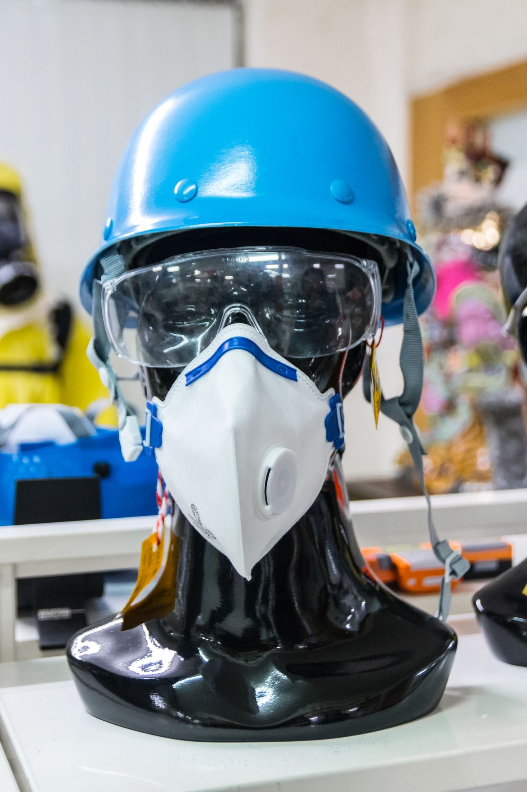
Safety & PPE Supply
Ship Chandler Germany can supply Safety and personal protective equipment according to vessel requirements and international standards at Hamburg, Bremerhaven, Bremen, Wilhelmshaven, Rostock, Lübeck, Kiel, Cuxhaven, Emden, Brunsbüttel, Wismar, Sassnitz/Mukran, Brake, Nordenham, Stade, Flensburg, Stralsund, Wolgast, Papenburg, and Leer. Where certification is required, the applicable standard or certificate requirement should be specified in the RFQ. A comprehensive range of safety equipment and PPE ensures the well-being of the crew and compliance with maritime safety regulations. The ship supply service prioritizes the availability of certified safety gear, including hard hats, safety harnesses, and fire-fighting related products. Sourcing durable coveralls, protective gloves, and respiratory protection is essential for hazardous onboard tasks. Ensuring strict adherence to SOLAS and international safety standards protects the crew and mitigates operational risks at sea.
- Safety helmets, safety shoes, and coveralls
- Protective gloves, safety goggles, and face shields
- Respiratory protection and safety harnesses
- Life-saving equipment and fire-fighting related products
- Safety signs, tapes, and first-aid products
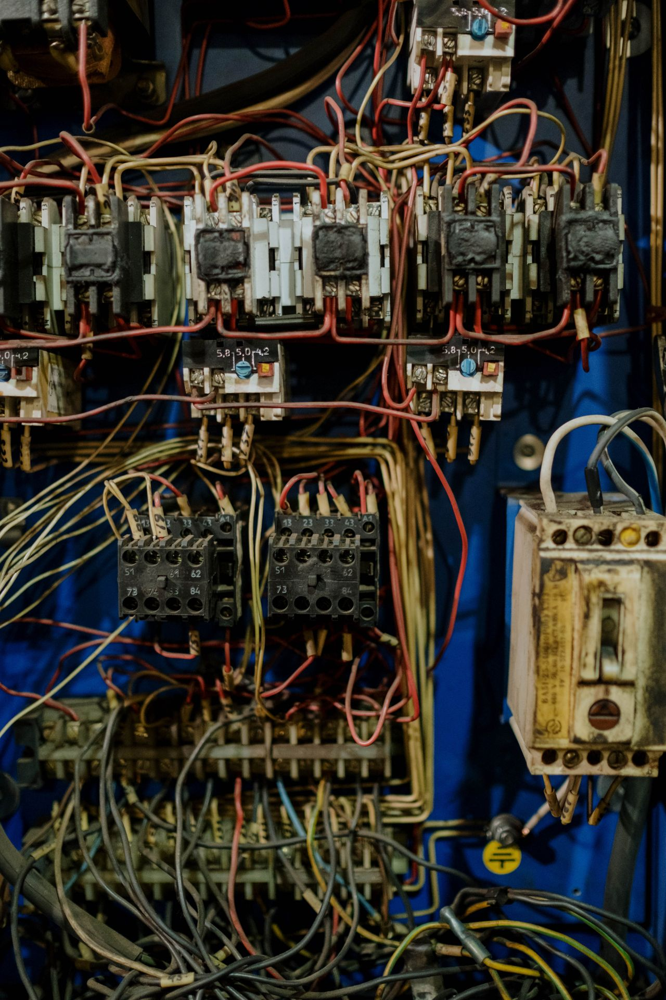
Electrical Stores Supply
Ship Chandler Germany sources electrical products and consumables for deck, engine-room, and accommodation requirements for commercial vessels across all German ports, including Hamburg, Bremerhaven, Bremen, Wilhelmshaven, Rostock, Lübeck, Kiel, Cuxhaven, Emden, Brunsbüttel, Wismar, Sassnitz/Mukran, Brake, Nordenham, Stade, Flensburg, Stralsund, Wolgast, Papenburg, and Leer. High-quality electrical stores, including marine lamps, cables, and circuit breakers, ensure the vessel's electrical systems remain operational and safe. The ship supply service provides essential electrical consumables, such as fuses, relays, and contactors, to support routine maintenance and emergency repairs. Sourcing specialized marine electronics and robust electrical tools allows the engineering team to troubleshoot and resolve technical issues efficiently. Reliable electrical supply ensures uninterrupted power and navigation capabilities throughout the voyage.
- Marine lamps, LED lighting, cables, and wires
- Plugs, sockets, circuit breakers, and fuses
- Contactors, relays, and switches
- Batteries, electrical tools, and cable accessories
- Electrical consumables
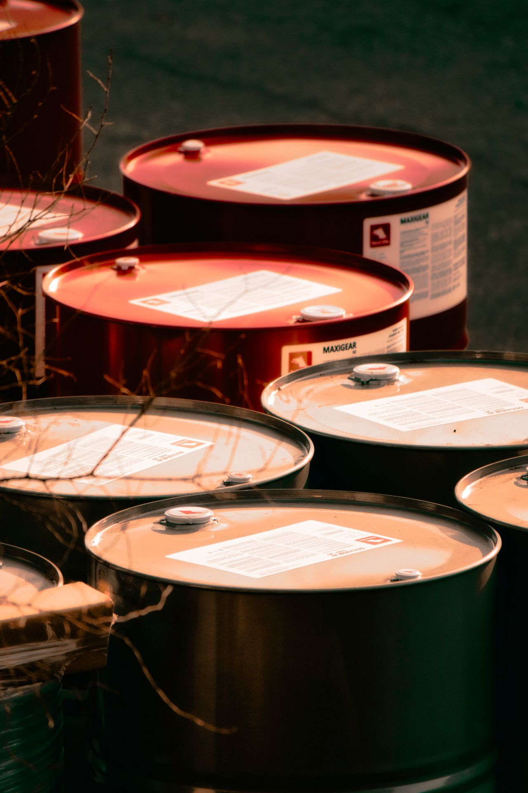
Marine Chemicals Supply
Ship Chandler Germany can supply Marine and industrial chemicals for vessel maintenance, water treatment, and operational requirements at Hamburg, Bremerhaven, Bremen, Wilhelmshaven, Rostock, Lübeck, Kiel, Cuxhaven, Emden, Brunsbüttel, Wismar, Sassnitz/Mukran, Brake, Nordenham, Stade, Flensburg, Stralsund, Wolgast, Papenburg, and Leer. Product specifications and Safety Data Sheets (SDS) can be provided where applicable. Ship Chandler Germany sources quality marine chemicals, including degreasers and tank cleaning products, to maintain vessel hygiene and operational readiness. The vessel supply service ensures the availability of specialized descaling chemicals and water-treatment solutions essential for engine room efficiency. Providing safe and effective maintenance chemicals, along with necessary documentation, supports the crew in performing critical cleaning and preservation tasks. Reliable access to marine chemicals maintains a safe and compliant working environment onboard.
- Cleaning chemicals and degreasers
- Rust removers and descaling chemicals
- Tank cleaning products
- Water-treatment chemicals
- Maintenance chemicals and engine-room cleaning products
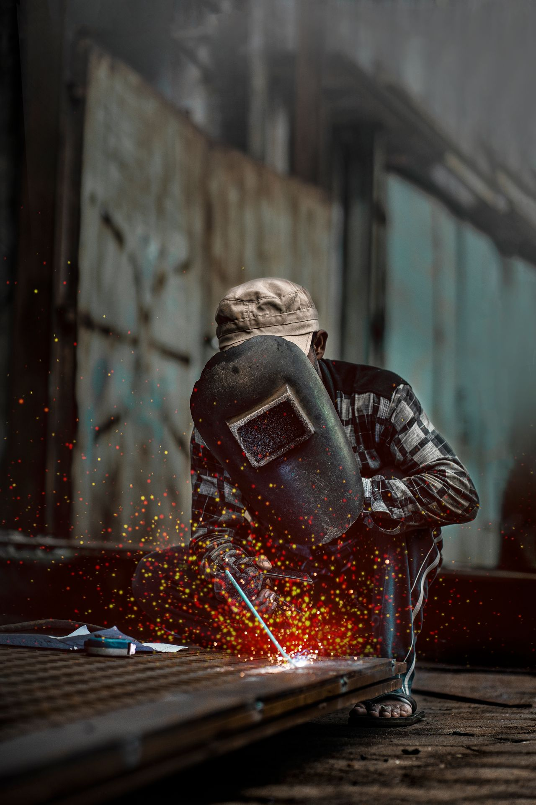
Welding Equipment & Consumables
Ship Chandler Germany can source a comprehensive range of welding and cutting materials for onboard maintenance and repair operations at all German ports, including Hamburg, Bremerhaven, Bremen, Wilhelmshaven, Rostock, Lübeck, Kiel, Cuxhaven, Emden, Brunsbüttel, Wismar, Sassnitz/Mukran, Brake, Nordenham, Stade, Flensburg, Stralsund, Wolgast, Papenburg, and Leer. Quality welding equipment, including electrodes, wires, and cutting discs, supports the vessel's crew in performing essential repairs and fabrication tasks safely and effectively. The ship supply service ensures the availability of robust welding accessories, regulators, and personal protective equipment. Sourcing reliable cutting and welding equipment is critical for structural maintenance and emergency repairs at sea. Access to industrial and marine gases, subject to local regulations, ensures the vessel's workshop remains fully operational for critical fabrication work.
- Welding electrodes and welding wire
- Cutting discs and grinding discs
- Welding accessories and welding PPE
- Regulators and hoses
- Cutting and welding equipment
- Industrial and marine gases subject to local availability and regulations
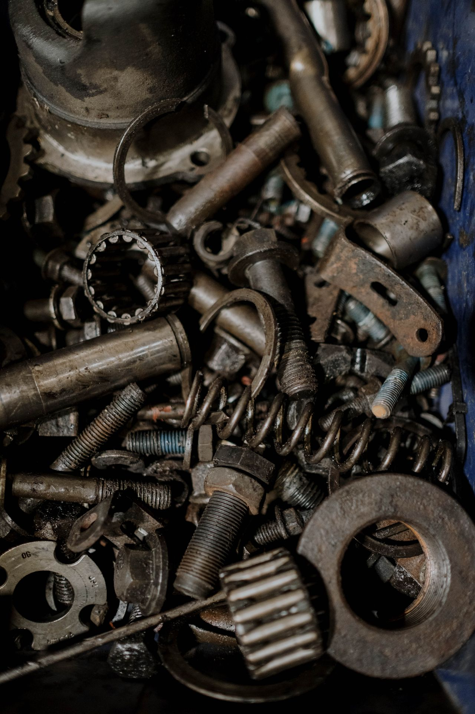
Marine Spare Parts & Technical Procurement
Ship Chandler Germany procurement team can assist with standard and non-standard marine spare parts and technical equipment at Hamburg, Bremerhaven, Bremen, Wilhelmshaven, Rostock, Lübeck, Kiel, Cuxhaven, Emden, Brunsbüttel, Wismar, Sassnitz/Mukran, Brake, Nordenham, Stade, Flensburg, Stralsund, Wolgast, Papenburg, and Leer. For faster identification, please provide maker, equipment model, serial number, OEM part number, IMPA reference, dimensions, drawings, or clear photographs. Sourcing quality marine spare parts for main engines, pumps, and compressors is critical to minimizing vessel downtime and ensuring operational reliability. The technical procurement service specializes in identifying exact replacement components, including electric motors, refrigeration parts, and hydraulic equipment. Reliable access to OEM and alternative spare parts supports the engineering department in executing timely overhauls and repairs, keeping the vessel compliant and operational.
- Main and auxiliary engine parts, pump components, compressor parts
- Electric motors, refrigeration components, and hydraulic components
- Navigation equipment and communication equipment
- Marine electronics and electrical components
- Industrial equipment
- OEM and alternative spare parts
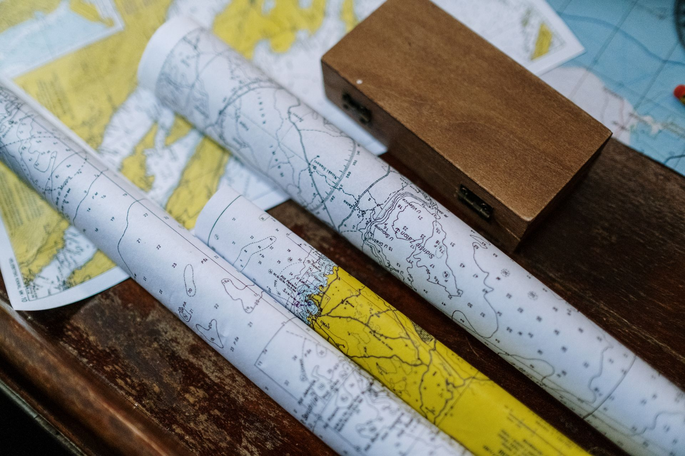
Nautical Charts & Publications
Ship Chandler Germany can assist vessels with nautical charts, marine publications, and operational reference materials required for their voyage at Hamburg, Bremerhaven, Bremen, Wilhelmshaven, Rostock, Lübeck, Kiel, Cuxhaven, Emden, Brunsbüttel, Wismar, Sassnitz/Mukran, Brake, Nordenham, Stade, Flensburg, Stralsund, Wolgast, Papenburg, and Leer. Access to up-to-date nautical charts and publications is essential for safe navigation and compliance with international maritime regulations. The ship supply service provides official vessel logbooks and record books to ensure mandatory documentation is accurately maintained. Sourcing the latest IMO, SOLAS, MARPOL, and STCW publications guarantees the vessel operates within current legal frameworks. Reliable supply of navigational notices and flag sets supports safe and efficient global transit.
- Admiralty nautical charts
- IMO, SOLAS, MARPOL & STCW publications
- Official vessel logbooks and record books
- Marine navigational notices and flag sets
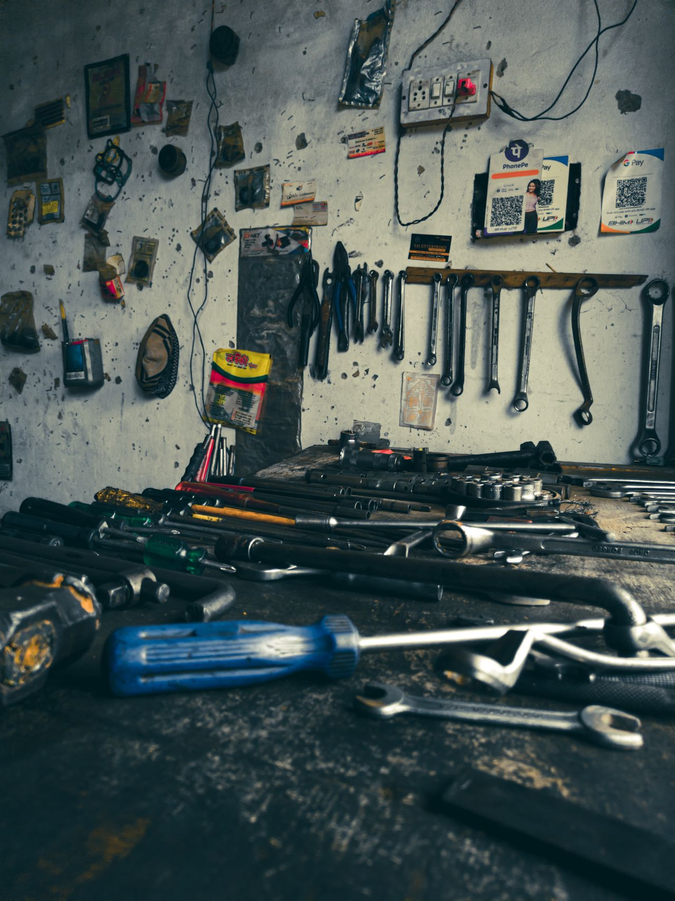
Tools & Marine Hardware
Ship Chandler Germany supply range includes hand tools, power tools, cutting tools, measuring equipment, fasteners, and general marine hardware for routine maintenance and emergency repairs at Hamburg, Bremerhaven, Bremen, Wilhelmshaven, Rostock, Lübeck, Kiel, Cuxhaven, Emden, Brunsbüttel, Wismar, Sassnitz/Mukran, Brake, Nordenham, Stade, Flensburg, Stralsund, Wolgast, Papenburg, and Leer. Ship Chandler Germany ensures that quality tools and marine hardware are readily available to support the vessel's crew in maintaining operational efficiency and safety. The vessel supply service provides durable hand tools and precision measuring equipment essential for engine room and deck tasks. Sourcing high-grade fasteners, drill bits, and abrasives ensures the workshop is prepared for challenging repair jobs. Access to professional-grade hardware and power tools enhances the crew's ability to perform complex maintenance tasks efficiently.
- Hand tools and power tools
- Cutting tools and measuring equipment
- Fasteners
- General marine hardware
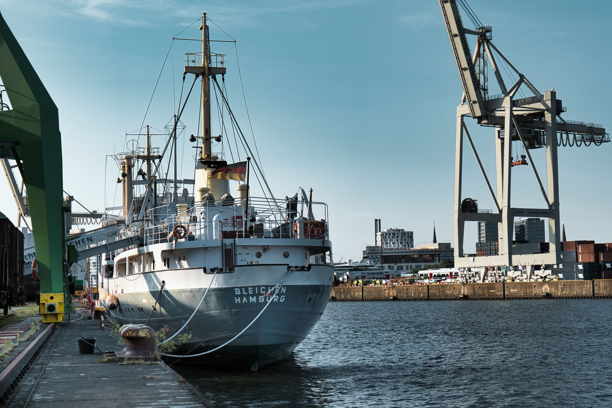
Urgent Ship Supply in Germany
Ship Chandler Germany understands that vessel schedules can change quickly. For urgent requirements at Hamburg, Bremerhaven, Bremen, Wilhelmshaven, Rostock, Lübeck, Kiel, Cuxhaven, Emden, Brunsbüttel, Wismar, Sassnitz/Mukran, Brake, Nordenham, Stade, Flensburg, Stralsund, Wolgast, Papenburg, and Leer, Ship Chandler Germany can coordinate procurement and delivery according to the vessel ETA, berth availability, port access, and local operating conditions. Urgent enquiries should clearly indicate the required delivery deadline so that availability and logistics can be assessed immediately to prevent vessel delays. The ship chandler service prioritizes rapid response and efficient sourcing of critical items, including emergency provisions and technical spares. Coordination with port agents and launch boats ensures rapid dispatch to the vessel's berth or outer anchorage, resolving last-minute shortages quickly.
- Emergency ETA and short-call coordination
- Rapid sourcing within vessel port stay
- Berth and outer anchorage launch dispatch
- Direct boarding agent synchronization
Ready to Supply Your Vessel?
Send us your requisition list and our team will provide a competitive quote.
Request a Quote Now